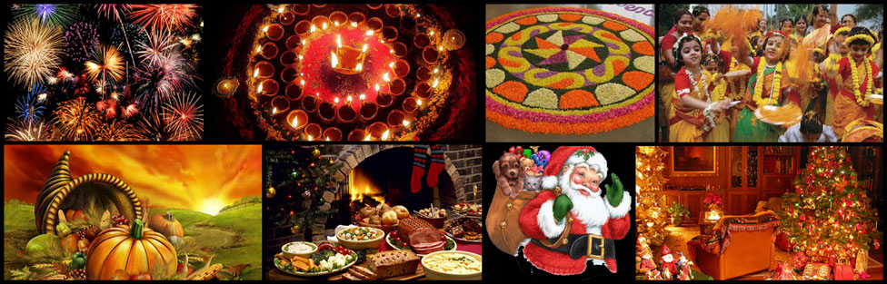

A festival is an event ordinarily celebrated by a community and centering on some characteristic aspect of that community and its religion or cultures. It is often marked as a local or national holiday, mela, or eid. A festival constitutes typical cases of glocalization, as well as the high culture-low culture interrelationship.[1] Next to religion and folklore, a significant origin is agricultural. Food is such a vital resource that many festivals are associated with harvest time. Religious commemoration and thanksgiving for good harvests are blended in events that take place in autumn, such as Halloween in the northern hemisphere and Easter in the southern.
Festivals often serve to fulfill specific communal purposes, especially in regard to commemoration or thanking to the gods and goddesses. Celebrations offer a sense of belonging for religious, social, or geographical groups, contributing to group cohesiveness. They may also provide entertainment, which was particularly important to local communities before the advent of mass-produced entertainment. Festivals that focus on cultural or ethnic topics also seek to inform community members of their traditions; the involvement of elders sharing stories and experience provides a means for unity among families.
